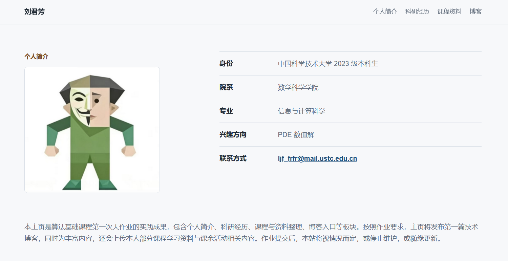
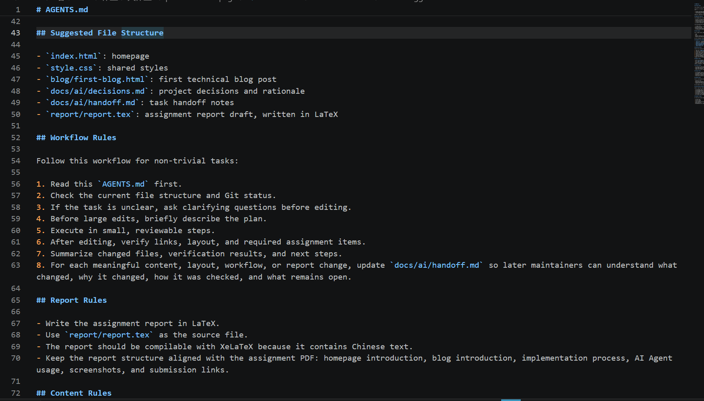
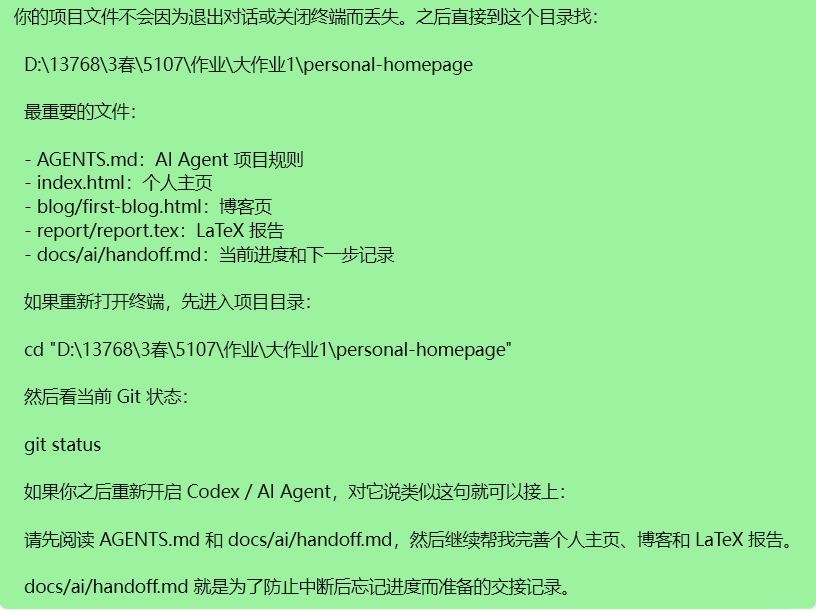
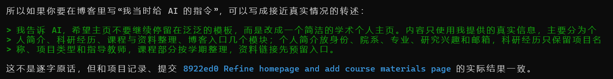
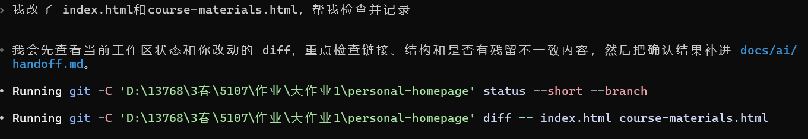
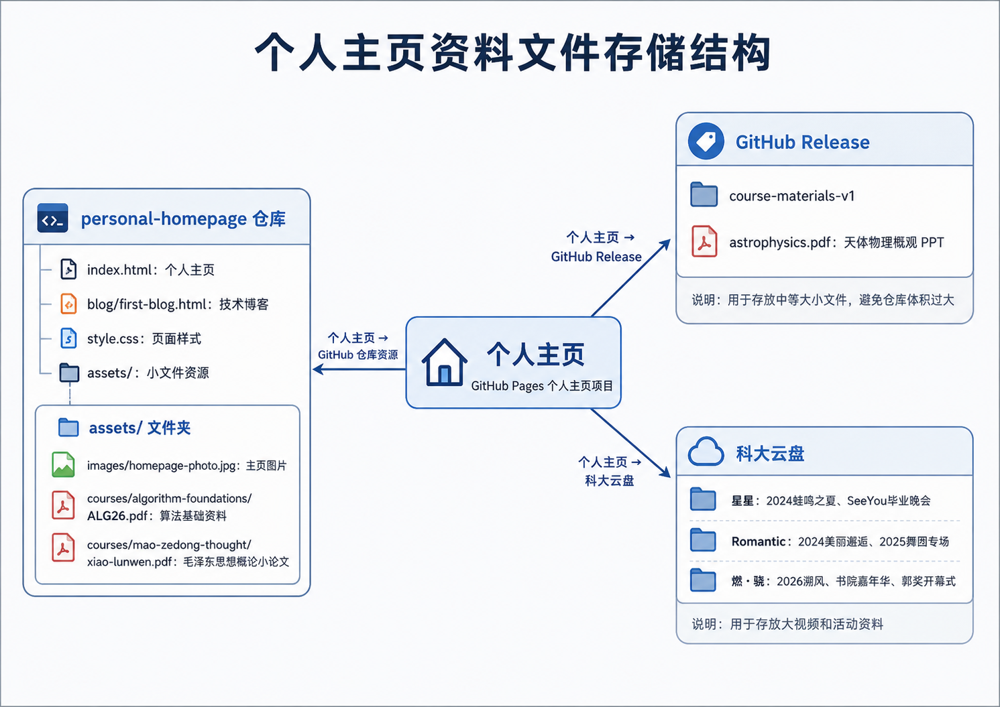

前言
这是算法基础课程大作业的实践记录。 这是我第一次使用AI Agent，从完全陌生到逐步上手，既体会到 AI Agent 带来的效率提升，也遇到了很多实际问题。本文把探索过程、波折经历与思考整理出来，既是作业交付，也是一次学习总结。 可能由于本人自带一股淡淡的死感，也有为了让内容看起来不那么人机的故意而为之，文风或许有些诡异；且框架来自AI，所以可能读起来还有一点割裂。至于这个选题，也算作一个小彩蛋，弥补了实验报告太过正式的优点。

一、我用到的工具
- AI 工具：Codex（接入 GPT Plus）
- 页面编写：HTML + CSS
- 部署上线：GitHub Pages
- 版本管理：Git（记录修改、回退历史、配合 GitHub Pages 部署）
- 文件存放：GitHub 仓库、GitHub Release、科大云盘
- 项目规范：AGENTS.md
二、AI Agent：一款更适合零基础宝宝的vibe coding教程
是的，Agent既可以是工具，也可以是教程。
我对AI Agent的唯一知识储备来自助教的两次习题课，然而悖论总是存在的：不听懂就不知道怎么上手实践，而什么都不做就根本没法听懂~
或许学校真的相信我们的学习能力，或许老师和助教默认我们已经有足够的前置知识，也或许我们确实需要一些更为零基础的教学，但事已至此，先用AI吧。
于是Codex在D老师的帮助下装上了。
于是G老师在人脉的帮助下接上了。
G老师在G老师的指导下用起来了：
G老师不负众望，拿着我一股脑塞过去的作业要求和习题课讲义的链接，自己建好了文件夹写好了文档顺便告诉了我每一步干什么。

大框架看起来没什么问题，小细节有问题也看不出来，所以先用着吧。然后一边问着G老师怎么写提示词，一边复制着它给的提示词进行下一步。 比起耗费时间精力去钻研那些不知道能用上多少的skill，我认为还是直接问AI入门更有效率。
用阳光向上的豆老师的话来说，刚开始接触 AI Agent 时，我完全不清楚它的能力边界。不知道它能独立完成哪些任务、需要我提供哪些信息。 每次下达指令前都会先试探：“你能不能帮我……？”“如果我想…… 需要我做什么？” 整个过程更像 “一边用一边学”：我一边搭建主页，一边向 AI 们学习如何正确使用它。这种边做边探索的模式，虽然起步慢，但很适合新手入门。
三、项目记录与版本管理：文档比人脑好用多了
哪怕我已经知道Agent可以通过某些上下文延续，但具体怎么操作依然是两眼一抹黑，而AI的优势在此体现得淋漓尽致： 问G老师的第一个大问题是搭建个人主页每一步具体要做什么，第二个问题就是如果关闭对话下一次怎么找回来。 其实哪怕之前没写这些东西，当你问过之后它也会自己补上。

在实践中这些文档的重要性愈发凸显，因为主页不是一次性搭建好的，而是我什么时候有了灵感就改一点，每次开机让它自己读一遍文档，既免了我每次大量的解释，又保证了内容的衔接。（我靠我怎么一股人机味）
另一个类似的东西是Git。刚开始只知道它大概能保存版本，但对其具体形态毫无概念，我只是一味地问G老师现在能不能commit。直到我开始写这个博客。虽然使用过程只是用自然语言告诉AI我想要回到哪一版，虽然最后也没找到需要的版本（具体原因在下一节），但是依然可以感受到版本管理的重要性。
以下是G老师原话： AGENTS.md 规定了项目目标、技术栈、内容真实性、部署方式和检查清单；docs/ai/handoff.md 则记录每一次重要修改，包括改了什么、为什么改、还剩什么问题。 这个记录过程一开始看起来有点繁琐，但后面非常有用。比如课程资料从主页内联列表调整到独立页面，后来又把部分资料改成 GitHub Release 或云盘链接，如果没有 handoff，很容易忘记某个链接为什么这样放、哪些内容还需要人工检查。 而Git更像是项目的时间轴：每次 commit 都把一个阶段的主页状态固定下来，想知道某个页面是怎么一步步变成现在这样的，就可以通过 git log、git show 和 git diff 往回翻。
四、指令难题：放飞自我的G老师
在与G老师磨合的过程中，最直接显现的问题是指令的尺度不好把握。
在指令太模糊，又有一定期望的情况下，结果几乎是必然不符合预期的。 我第一次真切意识到这点是在向主页框架里填充真实信息的时候。
我发了一段文字版的自我介绍上去让它自己整合，结果喜闻乐见地出现了信息重复、夸大事实、无中生有、详略不当等等问题。
（由于实在太丑了我甚至没有commit，以至于版本找不回来截图都没留下。这个故事告诉我们一定要及时存档，丑到极致的东西以后也是有可能用得上的。）
最后还是借鉴了更为擅长这一点的豆老师的建议，按照“模块-内容”规划好，重新写了提示词才完成大体分区。

后来开始调整页面细节，我就学会了给精确的指令。但是用着用着发现，指令细则对话碎，命令行的响应效率还低于普通对话，不考虑我对语法不熟悉的话，甚至不如我自己上手改来得快。

AI们的总结是：AI Agent 需要清晰但不过度细碎的指令，既要给目标，也要给边界。
五、进入正文：大文件到底怎么存
一方面是因为主页内容实在太贫瘠了，另一方面是常年在学长们的个人主页里寻觅往年考题与作业答案，所以得出暴论：没有资料的个人主页是不完整的。
在最初的设想中，主页可以有什么放什么——讲义、作业、答案、大作业、照片、视频等等等等。但实际操作中发现，我的这些文件大小差距极大，从几 KB 到几 GB 都有。小文件怎么操作都好办，但是大文件放到项目文件中占内存，搬到GitHub仓库更是不现实。我和 G老师反复讨论后，确定了一套分级存储方案：
- 小文件（≤30M）：论文、PDF、图片直接放入 GitHub Pages 仓库，访问最快、最稳定。
- 中等文件（30M~几百 M）：PPT、课件包上传到 GitHub Release，通过链接引用，不占主页仓库体积。
- 大文件（几个 G 视频）：没有找到合适的免费公开方案，最终上传到学校云盘，主页只放置跳转链接。

把每门课的资料都整理上传还是太耗时了，所以我暂时只把每种类型的文件挑了几个进行上传，先确认方案的可行性，后面有空再慢慢搞，没空就算了（bushi）。
六、非常官方的实践收获与思考
AI Agent 是 “协作伙伴”，不是 “替代者”。它能快速生成代码、写文档、给方案，但需求理解、结构设计、最终决策必须由人完成。
用好 AI 的关键是：会提问、会验收。模糊指令没用，过度指令浪费效率。学会把任务拆成目标明确、步骤清晰的任务，才能发挥 AI 最大价值。
AI 能提升效率，但不能代替思考与动手。页面报错、样式错乱、链接失效，最终还是要自己排查。AI 可以给思路，但解决问题仍靠自己。
AI Agent 编程会成为主流技能。这次作业让我体会到，未来学习算法、开发项目，AI 辅助会越来越普遍。提前学会和 AI 协作，本身就是一种重要能力。
七、非常不官方的实践收获与思考
你可以试着让AI干任何事，包括让AI教AI做事。
上一点和下一点完全是由AI生成的，体感上内容依旧重复，但由于表意还算准确，我不打算改了。
AI文字读久了很难不被腌入味。祝愿人类不会丧失语言能力。
总结
通过 AI Agent 搭建个人主页，我不仅完成了课程作业，更重要的是第一次真正体验了 AI 辅助开发的完整流程。从试探使用、优化指令，到整理项目记录、解决文件存储和部署问题，每一步都有真实收获。
AI 让入门更简单，但理解与思考依然是核心。未来我会继续用 AI 辅助学习算法与开发，让技术工具成为自己的助力。